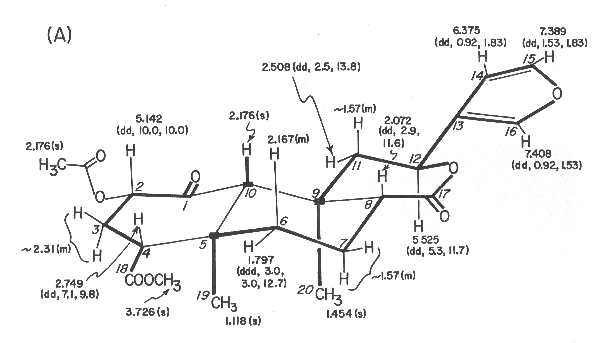
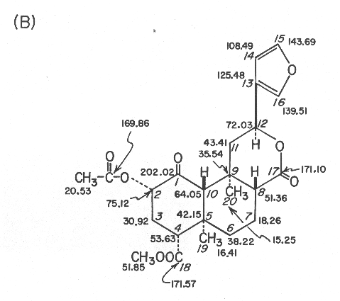
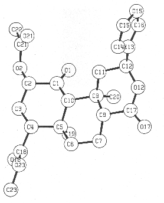
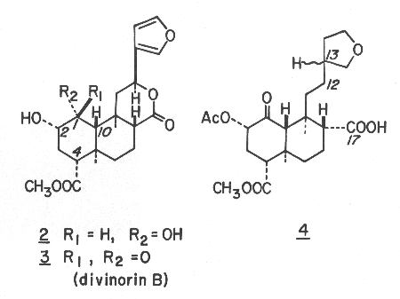

Divinorin A, a Psychotropic Terpenoid, and Divinorin B from the Hallucinogenic Mexican Mint, Salvia divinorum
Leander J. Valdes, III,*a William M. Butler,b George M. Hatfield,a Ara G. Paul,a and Masato Koreeda*b,1
aSchool of Pharmacy and bDepartment of Chemistry, The University of Michigan, Ann Arbor, Michigan 48109
Journal of Organic Chemistry, 1984, 49, 4716.
Received January 31, 1983
(HTML by Arachnophilia - apparent internal errors in the paper were corrected and, if introduced, are not the fault of the authors - Arachnid)
While nonalkaloidal constituents have been implicated as being at least partially responsible for the biological activity of several hallucinogenic plants,2 little has been reported on the structure of such possible hallucinogens. The Mexican labiate Salvia divinorum (Epling and Jatíva-M.) is used in divinatory rites by the Mazatec Indians of Oaxaca, Mexico. An infusion prepared from the crushed fresh leaves of this plant (known locally as ska Maria Pastora) is used to induce "visions" and its psychotropic effects have been verified by a number of researchers.3 Furthermore, upon administration of large doses of the plant extract in animals, one observes behavioral patterns that resemble the "intoxication" the infusion produces in human beings. Despite previous investigations, the principle(s) responsible for this biological activity has never been identified.4 We now report the isolation and the structures of the new neoclerodane diterpenes, divinorins A and B from S. divinorum. Divinorin A, the first clearly documented terpenoid,5 exerts a sedative effect on mice when tested in a bioassay based on a modification of Hall's open field.6
Lyophilized, pulverized leaves (5.35 kg) of S. divinorum were extracted with ether. The nonpolar components were removed from the concentrated extract through partition between hexanes and 90% aqueous methanol. The dried methanolic fraction was crudely purified by silica gel flash column chromatography7 (hexanes-ethyl acetate 2/1). Further purification of the biologically active fractions by additional silica gel flash column chromatography (methylene chloride-methanol 20/1) followed by repeated recrystallization yielded pure divinorin A (1) (1.2 g) and B (3) 50mg.

Figure 1. Divinorin a (1): (A) 360-MHz 1H NMR data in CDCl3, d values from (CH3)4Si [multiplicity and J values (in Hz) in parentheses];

(B) 90.56-MHz 13C NMR data in CDCl3, d values from (CH3)4Si; assignments are based on off-resonance, selective, and gated decoupling experiments and chemical shift comparisons with compounds 2-4 and model compounds.
Divinorin A (1), mp 242-244 °C, [a]22D -45.3° (c 8.530, CHCl3), had the molecular formula C23H28O8. The UV spectrum (211nm (e 5260)) was indicative of the presence of the furan moeity. This was further corroborated by the products from the hydrogenation reaction of divinorin A which was accompanied by hydrogenolysis at C-12. Thus, catalytic hydrogenation of divinorin A in methanol over 5% Pd/C provided quantitatively a stereoisomeric mixture (at C-13) of hexahydro derivatives 4. Although it was difficult to determine the presence of a ketone group from the IR spectrum of divinorin A alone, as its carbonyl region is strongly absorbed due to the presence of three other carbonyl functionalities, the presence of a highly hindered ketone group in divinorin A became evident from the results of its sodium borohydride reduction. The sodium borohydride reduction of divinorin A was found to be extremely sluggish at room temperature, presumably due to the severe steric crowding near the ketone located at C-1. However reduction at higher temperatures produced the mixture of 2 (40%) and its stereoisomeric diol (40%). The latter appears to be stereoisomeric at C-8 and/or C-9, which evidently has resulted from its "base promoted" C-8/C-9 cleavage followed by reclosure prior to the reduction. The stereochemistry of the diol 2 was secured as identical with that of divinorin A by its conversion to the later via acetylation with acetic anhydride/pyridine, at room temperature, followed by oxidation with pyridinium chlorochromate. In contrast, the same sequence of the reactions of the other diol gave a thus far undetermined stereoisomer of divinorin A.
Both 1H and 13C NMR spectra were particularly informative since all 1H and 13C signals could be observed and assigned through extensive proton decoupling, off-resonance decoupling, and selective decoupling experiments. These provided partial structures which are indicated in connecting thick lines and by solid blocks denoting quaternary carbons in Figure 1A. The linkage between C-1 and C-10 was ascertained from the 1H NMR spectrum in acetone-d6 of the diol 2, mp 218-220 °C, obtained in 40% yield from divinorin A with sodium borohydride in isopropyl alcohol at 35 °C for 2.5 h. Thus, inspection of the coupling constants, involving protons at C-10, C-1, and C-2 (J10b, 1b = 2.0 Hz, J1b,2b = 2.1 Hz, J2b,3b = 4.9 Hz, J2b,3a = 11.4 Hz, J3b,4b = 2.1 Hz, and J3a,4b = 13.2 Hz) led to the proposed structure for divinorin A.
The structure was finally confirmed by a single-crystal X-ray diffraction experiment. A perspective drawing of the final X-ray model, less hydrogen atoms, is shown in Figure 2. Details of the X-ray analysis are given in the Experimental Section and bond lengths, angles, other crystallographic parameters are provided in supplementary information.

Figure 2. Computer-generated perspective drawing of divinorin A (1) with crystallographic numbering scheme.

Divinorin B (3), mp 213-216 °C, [a]22D -3.39° (c 0.441, EtOH), was found to be desacetyl divinorin A, which was verified by the conversion into divinorin A via acetylation with acetic anhydride in pyridine. The absolute configurations are proposed based on the CD spectra (MeOH) of divinorins A (1) (De294 -2.63) and B (3) (De290 -1.41) and hexahydrodivinorin A (4) (De 295 -1.67). While the absolute configurations shown appear to be corroborated by the negative n ® p* Cotton effect of isofruticolone,9 the unambiguous assignment of the divinorins is yet to be made.
Experimental Section
Microanalysis was performed by Spang Microanalytical Laboratory, Eagle Harbor, MI. Melting points were taken on a Fisher Johns melting point apparatus and are uncorrected. The Ultraviolet spectrum was determined on a Hewlett-Packard 8450A UV/vis spectrophotometer. Infrared spectra were recorded on a Perkin-Elmer Model 281 spectrometer as potassium bromide (KBr) discs. Mass spectra were taken with a Finnigan Model 4023 GC/MS spectrometer. Nuclear magnetic resonance spectra were obtained on a Bruker WM360 spectrometer (360 MHz for 1H and 90.56 MHz for 13C) in CDCl3 unless otherwise stated and all chemical shifts are reported in parts per million relative to internal tetramethylsilane. Optical rotations were determined on a Perkin-Elmer 241 polarimeter using a quartz cell of 10-cm length and 1-mL volume. Circular dichroism spectra were recorded on a JASCO J-40A automatic recording spectropolarimeter using a quartz cell of 20-mm length and 3.5-mL volume.
Collection, Extraction, and Isolation. Live specimens of S. divinorum were collected at Cerro Quemado (Sept. 3, 1979) and Cerro Rabon (March 7, 1980) in Oaxaca, Mexico. The plants were cultivated at the Matthaei Botanical Gardens, The University of Michigan, in order to provide material for research.
Fresh Salvia leaves (5.350 kg) were lyophilized and forced through 7- and 16-mesh screens yielding 674.1 g of powdered dry material. The powder was extracted in 30-40-g lots for 24 h with ethyl ether (1 L/lot) using a Soxhlet apparatus and dried in vacuo, giving a total of 27.51 g of ether extract. The extract was partitioned between hexanes (600 mL) and 90 % aqueous methanol (600 mL) for 48 h using a liquid/liquid extractor and yielded, after removal of the solvent in vacuo, a 7.41-g methanol fraction. The hexane fraction was repartitioned as above and the combined concentrated methanol fractions (9.36 g) were subjected to further purification by flash column chromatography.
In a typical experiment, a Fischer Porter 2.5 x 25 cm column containing 55 g of silica gel (70-230 mesh) which had been treated with 2.75 mL of water, was equilibrated with the eluting solvent, hexanes/ethyl acetate (2/1). Five hundred milligrams of the methanolic fraction was adsorbed on 5 g of silica gel and carefully poured on the preequilibrated column. The eluting solvent was then forced (using nitrogen pressure) through the column at the flow rate of 25-35 mL/min and 100 mL fractions were collected. Each fraction was then followed by bioassay and fractions 4-9 were determined to be active. The 9.36 g of methanolic fraction yielded 2.349 g of desired crude material. The material recovered was further purified by using another flash column chromatography. Five hundred milligrams of the crudely purified methanol fraction, adsorbed on 5 g of silica gel, was added to the top of the 2.5 x 25 cm Fischer Porter column containing 55 g of silica gel which had been treated with 2.75 mL of water and preequilibrated with the eluting solvent, methylene chloride/methanol (20/1). The column was eluted at a rate of 25-35 mL/min with the aid of 5 psi of nitrogen pressure, and 25 mL fractions were collected. The biologically active fractions (fractions 3-5) were combined. The 2.349 g of starting material gave 1.515 g of impure diterpene mixture from which pure divinorin A (893 mg) was obtained after two recrystallizations from absolute ethanol. The combined mother liquors were subjected to preparative TLC purification (Merck GF-254, 15 x 1 mm plate, 20 x 20 cm, developed with CHCl3/MeOH/H2O, 100.10/1), which gave more divinorin A (305 mg, Rf 0.63) and crude divinorin B. The crude divinorin B was further purified by two recrystallizations from methanol, yielding 50 mg of divinorin B (Rf 0.48). Divinorin A (1): 242-244 °C; [a]22D -45.3° (c 8.530, CHCl3); UV (MeOH) 211 nm (e 5260); IR (KBr) 3220, 1745, 1735, 1240, 875 cm-1; NMR (1H and 13C) see Figure 1; mass spectrum (EI, 70 eV), m/z 432 (M+, 1.5), 273 (6.5), 166 (8.6), 121 (13.0), 108 (8.0), 107 (9.7), 95 (17.9), 94 (100), 93 (9.9), 91 (6.9), 81 (11.2), 79 (5.5), 55 (13.7); CD (MeOH) De294 -2.63; Anal. Calcd for C23H28O8: C, 63.89; H, 6.48; O, 29.63. Found: C, 63.44; H, 6.61; O, 30.14. Divinorin B (3): mp 213-216 °C; [a]24D -3.39° (c 0.441, EtOH); IR (KBr) 3495, 3140, 1735, 1715, 1250, 860 cm-1; 1H NMR (360 MHZ) d 1.101 (s, 3 H, 19-H), 1.484 (s, 3 H, 20-H), 1.50-1.65 (m, 3 H, 7-H's and 11b-H), 1.797 (ddd, 1 H, J = 2.7, 3.1, 12.9 Hz, 6a-H), 2.020 (ddd, 1 H, J = 11.4, 13.5, 13.6 Hz, 3a-H), 2.074 (dd, 1 H, J = 2.0, 11.7 Hz, 8-H); 2.169 (s, 1 H, 10-H); 2.17 (m, 1 H, 6b-H); 2.480 (ddd, 1 H, J = 3.1, 7.7, 13.6 Hz, 3b-H); 2.548 (dd, 1 H, J = 5.2, 13.4 Hz, 11a-H); 2.709 (dd, 1 H, J = 3.1, 13.5 Hz, 4-H); 3.599 (d, 1 H, J = 3.3 Hz, OH); 3.717 (s, 3 H, COOMe); 4.080 (ddd, 1 H, J = 3.3, 7.7, 11.4 Hz, 2-H); 5.567 (dd, 1 H, J = 5.1, 11.7 Hz, 12-H); 6.376 (dd, 1 H, J = 0.92, 1.8 Hz, 14-H); 7.399 (dd, 1 H, J = 1.5, 1.8 Hz, 15-H); 7.416 (dd, 1H, J = 0.92, 1.5 Hz, 16-H); 13C NMR (C5D5N; 90.56 MHz); d 15.35 (q), 16.49 (q), 18.89 (t), 35.82 (t), 38.31 (s), 42.44 (s), 43.53 (t), 51.22 (d), 51.51 (q), 53.62 (d), 63.18 (d), 71.99 (d), 75.27 (d), 109.31 (d), 126.64 (s), 140.26 (d), 144.15 (d), 171.38 (s), 172.59 (s), 209.79 (s) ppm; CD (MeOH) De290 -1.41.
Hexahydrodivinorin A (4). A mixture of 150 mg of divinorin A (1) in 100 mL of methanol and 162 mg of 5% palladium on charcoal in a 125 mL round bottomed flask was hydrogenated at room temperature under a slightly positive pressure for 24 h. The catalyst was removed by filtration and the solvent removed in vacuo. The residual oil was dissolved in 25 mL of methylene chloride and extracted 3 times with 5-mL portions of 1 % NaHCO3 in H2O. the combined aqueous layers were acidified to pH 1.0 with concentrated HCl and extracted 3 times with 5-mL portions of methylene chloride. The organic fraction was taken to dryness in vacuo and the crude oily product was recrystallized from ethanol-water to provide pure hexahydrodivinorin A (4) (143 mg): mp 196-198 °C; IR (KBr) 3100, 1755, 1735, 1725, 1225 cm-1; 1H NMR (360MHz) d 1.033 (s, 3 H), 1.340 and 1.345 (both s, total 3 H), 2.137 and 2.139 (both s, total 3 H), 3.686 (s, 3 H); 13C NMR (90.56 MHz) d 15.99 (q), 19.71/19.74* (q), 20.48 (q), 21.26 (t), 27.19/27.27* (t), 31.33 (t), 32.10/32.22* (t), 38.10 and 38.29 (multiplicities not certain due to overlap), 38.19 (s), 38.37 (t), 39.56/39.63* (d), 42.91/42.92* (s), 49.05*/49.08 (d), 51.71 (q), 54.02*/54.15 (d), 58.67*/58.79 (d), 67.84 (t), 73.31*/73.37 (t), 75.44*/75.45 (d), 169.61 (s), 171.65 (s), 177.26*/177.49 (s), 202.08/202.10* (s) (the paired chemical shifts represent those of spectroscopically resolved diastereomers, and the ones with asterisks indicate the more intense 13C peaks between the two paired); mass spectrum (CI; CH4) m/z (relative intensity) 467 (12), 440 (22), 439 (M + H+, 100), 437 (11), 422 (15), 421 (68), 167 (6), 104 (17), 99 (8), 97 (6), 95 (7), 85 (9); CD (MeOH) De295 -1.67.
Sodium Borohydride Reduction of Divinorin A. Divinorin A (1, 260mg) was dissolved in 120 mL of isopropyl alcohol in a 200-mL round bottomed flask and was treated with 14 mg of sodium borohydride. The mixture was warmed up to 33-35 °C and was kept at that temperature for 2.5 h. The reaction was terminated by addition of 3 mL of methanol. The solvent was removed under vacuum and the dried crude products were re-dissolved in 50 mL of chloroform and and washed with 50 mL of 1 % HCl and twice with 50 mL portions of water. The organic fraction was dried over sodium sulfate and taken to dryness (255 mg). The crude mixture was purified through flash column chromatography on silica gel (230-400 mesh; 30 g) using hexanes/ethyl actetate (1/2) as the eluting solvents. The more polar diol (2; 124 mg) was recovered along wit the less polar, thus far unidentified stereoisomeric diol (120 mg; mp 234-235 °C). Diol 2: mp 218-220 °C; [a]25D +1.16° (c 1.55, EtOH); IR (KBr) 3505, 1725, 1705 cm-1; 1H NMR (acetone-d6, 360 MHz) d 1.163 (s, 1 H 10-H), 1.375 (s, 3 H), 1.438 (s, 3 H), 1.56-1.62 (m, 4 H, 3b-H, 6-H's, and 7a-H), 1.799 (dd, 1 H, J = 11.9, 13.2 Hz, 11b-H),1.964 (dddd, 1 H, J = 3.3, 3.3, 3.5, 13.8 Hz, 7b-H), 2.109 (ddd, 1 H, J = 11.4, 12.7, 13.2 Hz, 3a-H), 2.203 (dd, 1 H, J = 2.1, 13.2 Hz, 4-H), 2.294 (dd, 1 H, J = 3.3, 12.3 Hz, 8-H), 2.494 (dd, 1 H, J = 5.6, 13.2 Hz, 11a-H), 3.358 (br s, 1 H, 1-OH), 3.553 (dddd, 1 H, J = 2.0, 4.9, 5.4, 11.4 Hz, 2-H), 3.623 (s, 3 H, COOMe), 4.027 (d, 1 H, J = 5.4 Hz, 2-OH), 4.207 (br s, 1 H, 1-H), 5.594 (dd, 1 H, J = 5.6, 11.9 Hz, 12-H), 6.593 (dd, 1 H, J = 0.7, 1.8 Hz, 14-H), 7.556 (dd, 1 H, J = 1.6, 1.8 HZ, 15-H), 7.650 (dd, 1 H, J = 0.7, 1.6 Hz, 16-H); 13C NMR (acetone-d6, 90.56 MHz) d 17.02 (q), 18.07 (q), 19.71 (t), 29.39 (t), 37.39 (s), 38.50 (s), 41.22 (t), 44.75 (t), 51.24 (q), 52.79 (d), 55.81 (d), 56.05 (d), 69.69 (d), 72.12 (d), 72.33 (d), 109.70 (d), 127.74 (s), 140.62 (d), 144.52 (d), 172.12 (s), 173.75 (s); mass spectrum (CI; CH4), m/z (relative intensity) 421 (7), 394 (21), 393 (M + H+, 100), 375 (74), 357 (78), 343 (87).
Conversion of Diol 2 to Divinorin A (1). The diol 2 (25mg) was dissolved in 7 mL of dry pyridine, placed in a 25-mL round bottomed flask, and treated with 1 mL of acetic anhydride. After being stirred at room temperature for 5 h, the reaction was terminated by addition of 1 mL of methanol. The mixture was poured into ice water (50mL), its pH was adjusted to ~10 by addition of aqueous NH4OH and it was extracted twice with 60 mL portions of chloroform. The combined organic layers were washed with 25 mL of 10 % aqueous HCl and then 25 mL of water, dried over sodium sulfate, and evaporated in vacuo. The crude mixture (35 mg) was purified via flash column chromatography (50 g of 230-400 mesh silica gel; eluted with hexanes/ethyl acetate (1/1), providing 21 mg of the diol (2) 2-monoacetate along with 2 mg of the starting diol 2. Diol (2) 2-monoacetate: IR (KBr) 3600, 1740, 1735, 1240 cm-1; 1H NMR (360 MHz) d 1.002 (s, 1 H, 10-H), 1.390 (s, 3 H), 1.458 (s, 3 H), 2.096 (s, 3 H, OAc), 3.677 (s, 3 H, COOMe), 4.292 (br s, 1 H, 1-H), 4.696 (ddd, 1 H, J = 3.2, 4.6, 11.7 Hz, 3-H); 13C NMR (90.56 MHz) d 16.81, 17.90, 18.72, 21.07, 24.90, 36.96, 37.87, 40.66, 51.43, 52.58, 55.00, 55.88, 67.36, 71.75, 74.60, 108.47, 125.91, 139.39, 143.78, 169.61, 171.68, 172.44.
The diol (2) 2-monoacetate (19 mg) , dissolved in 5 mL of methylene chloride, was placed in a 25-mL round bottomed flask and treated with 53 mg of PCC in 5 mL of methylene chloride at room temperature. After 30 h, the reaction mixture was diluted with 50 mL of ether. The ether layer was recovered by decantation and the dark residue was extracted with 10 mL of ether. The combined ether layers were dried over sodium sulfate and the organic solvents removed in vacuo. The crude reaction products (20 mg) were purified via flash column chromatography [55 g of Merk silica gel, 230-400 mesh; eluted with hexane/EtOAc (3/2)] which yielded 10 mg of divinorin A (1) and 5 mg of diol (2) 2-monoacetate.
Acetylation of Divinorin B (3). Divinorin B (10 mg) dissolved in 5 mL of dry pyridine and placed in a 10-mL round bottomed flask, was treated with 0.5 mL of acetic anhydride at room temperature. The mixture was stirred for 6 h at that temperature. The reaction was terminated by addition of 1 mL of methanol and the mixture was poured into ice water (50 mL). The resulting precipitates were collected by filtration, washed thoroughly with water and dried in vacuo. The crude product was recrystallized from absolute ethanol and found identical with divinorin A.
X-ray Crystallographic Analysis of Divinorin A (1). Crystals of divinorin A were obtained by slow cooling of a saturated ethanolic solution. A crystal of dimensions 0.078 x 0.269 x 0.418 mm was mounted on a Syntex P21 diffractomenter and found to have the space group P212121 with a = 6.369 (2) Å, b = 11.366 (4) Å, and c = 30.747(12) Å. The density was calculated to be 1.29g/cc for Z = 4. Intensity data were obtained using Mo Ka radiation monochromatized by means of a graphite crystal whose diffraction vector was perpendicular to the diffraction vector of the sample. A total of 2494 reflections with 2q < 50° were measured, of which 1376 were considered observed [I > 3s(I)]. The data were reduced by procedures previously used.10 The structure was solved using MULTAN78. Hydrogen atomic positions were calculated and added to the structure. They were given isotropic temperature factors one unit greater than the atom to which they were attached and their positions were not refined. Standard techniques were used to refine the structure to R1 = 0.087 and R2 = 0.092.
Note Added in Proof. After the original submission of the manuscript we learned that Ortega et al. reported the structure of salvinorin which is identical with that of divinorin A described herein (Ortega, A.; Blount, J.F.; Manchand, P.S. J. Chem. Soc., Perkin Trans. I 1982, 2505). Therefore divinorins A and B should be called salvinorins A and B respectively.
Acknowledgement. We are grateful to the National Science Foundation and the University of Michigan for their contributions to the purchase of a Bruker 360-MHz NMR and Finnigan 4023 GC/MS spectrometer. L.J.V. is grateful for a Lilly Endowment Fellowship in Pharmacy during the course of this work.
Registry No. 1 837-29-01-5; 2 92545-29-4; 3 92545-30-7; 4 92545-31-8.
Supplementary Material Available: (X-ray Crystallographic ordering data was not copied - Arachnid).
- Address correspondence to this author at the Department of Chemistry.
- (a) Schultes, R.E.; Hofmann, A. "The Botany and Chemistry of Hallucinogens", Charles C. Thomas, Publisher: Springfield, IL, 1980, 2nd ed. (b) Lewis, W.H.; Elvin-Lewis, M.P.F. in "Medical Botany", Wiley; New York, 1977; Chapter 18. (c) Díaz, J.L. Ann. Rev. Pharmacol. Toxicol. 1977, 17, 647.
- (a) Wasson, R.G. Bot. Mus. Leafl., Harvard Univ., 1962, 20, 77. (b) Hofmann, A. "LSD; My Problem Child"; McGraw-Hill; New York, 1980; pp. 127-144. (c) Valdes, L.J.; Diaz, J.L.; Paul, A.G. J. Ethnopharmacol. 1983, 7, 287.
- (a) Hofmann, A. Planta Medica 1964, 12, 341. (b) Diaz, J.L. in "Etnofarmacologia de Plantas Alucinoginas Latinoamericanas"; Diaz, J.L., Ed.; Centro Mexicano de Estudios en Farmaco-dependencia: Mexico City, 1975, pp. 149-152. Although it was reported that active fractions reacted with Ludy Tenger reagent (a modified Dragendorff's reagent) and possibly alkaloids, extensive work in our laboratory has shown that pharmacologically active extracts from S. divinorum do not contain alkaloids, nor were we able to isolate any alkaloids from the plant itself.
- Infusions and tinctures of the green matter from Lagochilus inebrians Bge. are described as having pharmacological activity exhibited by hemostatic and sedative properties of a general nature that are in part attributed to the spiro ether-containing labdane, lagochilin, which as been isolated from the plant. However, details regarding the preparations and the diterpene itself are not available: (a) Abramov, M.M.; Yaparova, S.A. J. Appl. Chem., USSR 1963, 36, 2471. (b) Chizhov, O.S.; Kessenikh, A.V.; Yakolev, I.P.; Zolatorev, B.M.; Petukhov, V.A. Tetrahedron Lett. 1969, 1361.
- Brimblecombe, R.W.; Green, A.L. Nature (London) 1962, 194, 983. The following is a summary of our modified bioassay: Mice were dosed with various fractions of the extract and the animals' activities were observed in the field, which consisted of a 3-ft. circle divided into squares. Parameters measured were the number of squares entered (lines crossed), rearings on the hind legs, and time spent immobile. Divinorin A reduced all three measurements of activity, resembling that of S. divinorum in human beings.2c
- Still, W.C.; Kahn, M.; Mitra, A. J.Org. Chem. 1978, 43, 2923.
- Purified, recrystallized divinorin A has activity slightly stronger than the original plant extract, whereas divinorin B was inactive in this bioassay (this does not preclude the possibility of a different psychotropic activity in the latter). The mother liquor from recrystallization contains at least two more terpenoids in addition to these two divinorins. This mixture shows substantially stronger activity, thus suggesting the presence of a minor component(s) that either synergistically enhances the activity of divinorin A or has strong sedative properties in itself. Isolation of these minor components and identifying their activities is currently being pursued.
- Martinez-Ripoli, M.; Fayos, J.; Rodriguez, B.; Garcia-Alvarez, M.C.; Savona, G.; Piozzi, F.; Paternostro, M.; Hanson, J.R. J. Chem. Soc., Perkin Trans. I 1981, 1186.
- Butler, W.M.; Tanaka, Y.; Koreeda, M. J. Org. Chem. 1981, 46, 4620.